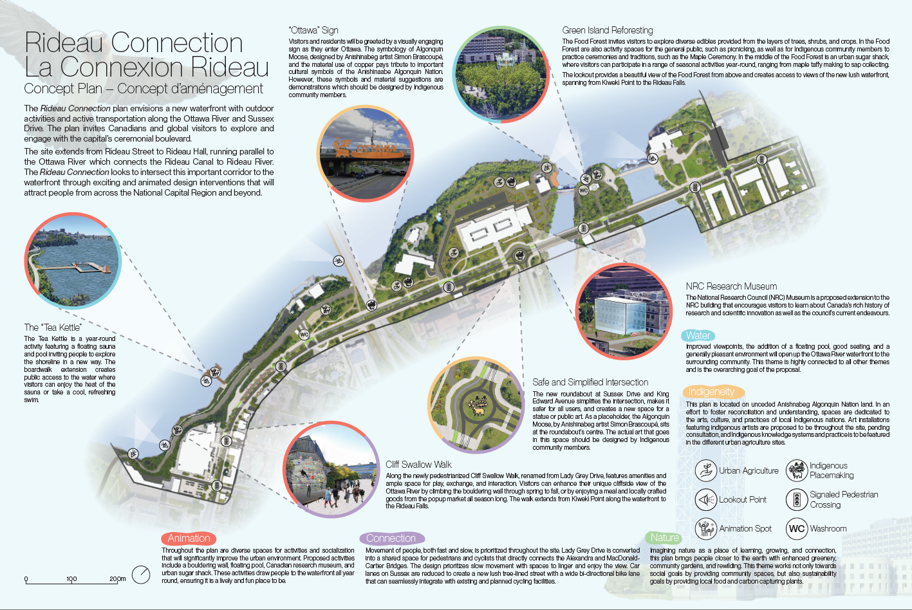
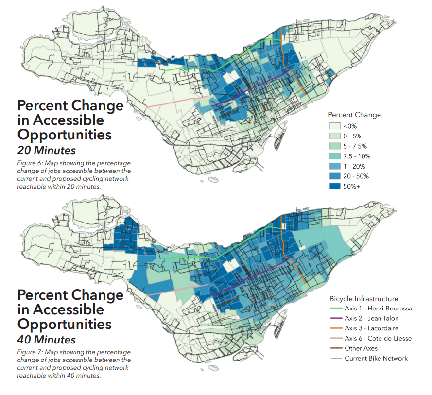
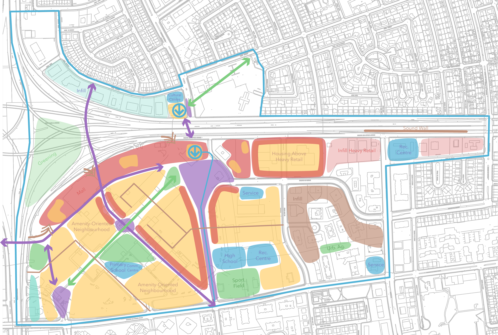
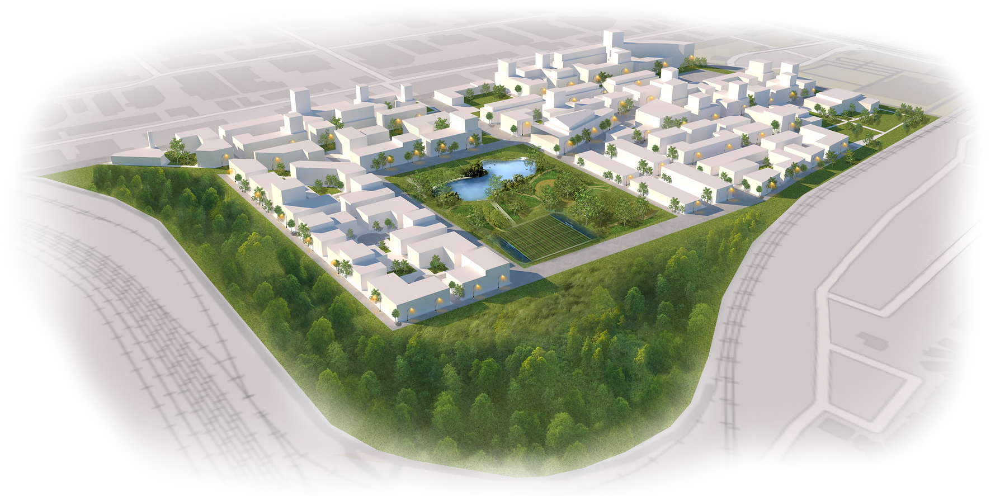

Rideau Connection Concept Plan
National Capital Commission Urban Design Challenge
Winner — 2023
The 2023 NCC opened a design challenge to redesign the eastern stretch of Sussex Drive. Currently a underused area of overbearing mid-century office blocks, the main challege was to reconnect Ottawa with the existing waterfront in a way that will rejuvinate the area and open up the waterfront to the public.
Myself along with Christina Hoang and Stephen Hickson created the winning proposal for this challenge. Our proposed concept plan for the site was based upon five themes: Animation, Connection, Nature, Water and Indigeneity. From these themes we proposed a transformation of the current Lady Grey Drive into a pedestrian prominate filled with a varied and continious array of interventions ensuring a consistant level of interest for the whole promenade.
These intervensions include a floating pool/sauna, natural bouldering wall, a new National Research Council open museum, indigenous art, rewilding, and urban agriculture throughout. We also propose a narrowing of Sussex Drive We believe these intervensions would greatly improve the experience of Ottawa's eastern waterfront and transform it into the wonderful area it has the potential to be. The NCC seems inclined to agree.
See the whole report here.
|

Analysis of Cycling Accessibility in Montréal’s REV Phase 2 Axes
Masters Land Use and Transportation Class – 2023
In 2023, the City of Montréal released a map of six new bike axes for the Réseau Express Vélo, the Express Bike Nework which is a series of high-quality bike lanes throughout the city. For me final paper, I wanted to answer the question: how effective are these new axes at imporving people's access to jobs via cycling?
After exploring using the R5R library to create this analysis, I used QGIS's QNEAT3 plugin to calculated a distance matrix for all the census tracts in Montréal on the existing and future cycling network. The result was the maps that you can see here showing the improvements to cycling access from the new cycling axes. Several more maps can be seen in the full report.
I was able to conclude that these new axes were effective at improving access to jobs via cycling. and would be a great improvement to the cycling infrastructure in the city. However, improvements towards the south-western boroughs of LaSalle and Verdun were lacking, expecially considering these boroughs are some of the poorer ones in Montréal.
See the entire boards here.
|

Bleu Anjou Concept Plan
Masters Studio III – City of Montréal – 2022
With the City of Montréal as the client, for this Planning Studio we were acting on a mandate to create a concept plan for the area around the proposed terminal station of the extended Blue metro line to Anjou.
Currently, the terminal station will be next to the Galeries d'Anjou mall. The concept replaes this mall and was centred around the idea of a complete neighbourhood and transit-oriented development. As a result, my team and I developed a plan calling for a relocation of the mall to the edge of the site, acting as a barrier to the highway, and the development of the site into approximately ,000 units of mixed housing along with social services and plenty of public space. The urban design of the new neighbourhood including sight lines, pedestrian and traffic flows focusing on the new metro station, and connections and cohesiveness to surrounding neighbourhoods were also taken into account.
See the situational report here.
See the final concept here.
|

Habitat Hippodrome
Masters Studio II – 2022
See the project website here.
|
Homes for All Housing and Community Model
Masters Studio I – 2021
|
Montréal Open Data Observatory
CRIEM – 2020
|
Burnside Hall Modelling
WiFi Geolocation Egress – 2020
|